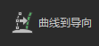
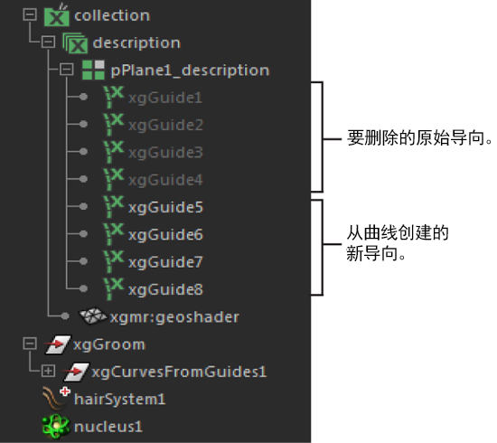

如果创建基于导向的描述，则可以使用 nHair 系统中的动力学曲线设置导向的动画。使用“曲线到导向”(Curves to Guides)工具，可以将动力学曲线转化为导向，然后它驱动头发、毛发或实例化样条线。请注意，此工作流仅使用 nHair 系统中的动力学曲线。头发和毛发仍然基于 XGen。
可以使用同一技术设置其他类型的样条线基本体对象（如草、鳞片或羽毛）的动画。有关创建基于导向的描述的信息，请参见使用样条线基本体创建头发或毛发。
提示： 准备工作：
- 定形导向以创建基础修饰或姿势。请参见定形和控制 XGen 基本体。
- 在 XGen 编辑器工具栏中，清除预览 ()，然后禁用“自动更新预览”(Update Preview Automatically)使查看曲线和导向动画变得更轻松。
- 在 XGen 编辑器中，选择“基本体”(Primitives)选项卡。
- 在“导向动画”(Guide Animation)部分中，启用“使用动画”(Use Animation)。
- 单击“创建头发系统”(Create Hair System)。
- 在显示的“使曲线动力学化选项”(Make Curves Dynamic Options)窗口中，执行以下操作：
- 将“输出”(Output)设置为“NURBS 曲线”(NURBS Curves)。
- 请确保所有其他选项都处于启用状态。
- 单击“使曲线动力学化”(Make Curves Dynamic)。
- 在“大纲视图”(Outliner)窗口中，展开 hairSystemOutputCurves，然后选择所有曲线。
- 在 XGen 编辑器中，单击“工具”(Utilities)选项卡。
- 选择“曲线到导向”(Curves to Guides)：。
- 在“曲线到导向”(Curves To Guides)下，执行以下操作：
- 禁用“删除曲线”(Delete Curves)。
- 启用“保留动态链接”(Preserve Dynamic Link)。
启用时，此选项保持曲线和已转化导向之间的动态连接，以便导向继承曲线动画。
- 将所有其他“曲线到导向”(Curves to Guides)选项调整为所需设置。请参见曲线到导向选项。
- 单击“添加导向”(Add Guides)。
Maya 将动力学曲线转化为新导向并隐藏原始导向。新导向将继承曲线动力学特性。
- 在大纲视图中，选择隐藏的导向并将其删除。

- 转到开始帧，然后播放模拟以查看已设置动画的导向。
更新预览 (
 ) 并播放模拟以查看已设置动画的样条线。
) 并播放模拟以查看已设置动画的样条线。
有关设置 nHair 系统的初始状态的信息，请参见设置头发曲线位置和开始静止和当前位置曲线。
使用 Nucleus 力（请参见 nDynamics 模拟框架）或 Maya 场（请参见 Maya 场）将更多动态运动添加到样条线基本体。添加 XGen 修改器（如“风”(Wind)）（请参见 XGen 风修改器选项），以便为非动态运动创建。